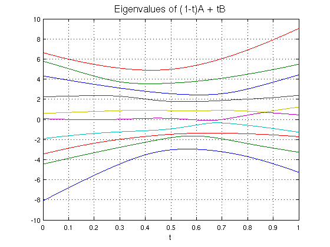
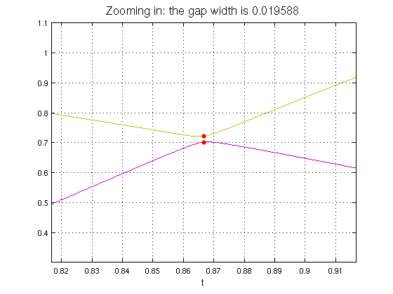

Eigenvalue level repulsion
Nick Trefethen, October 2010
(Chebfun example linalg/LevelRepulsion.m)
If A and B are real symmetric matrices of dimension n, then each will have n real eigenvalues, counted with multiplicity. If you morph one matrix into the other by the formula
A(t) = (1-t)A + tB ,
then as t increases from 0 to 1, the eigenvalues will change continuously from those of A to those of B.
It is possible for A(t) to have multiple eigenvalues for some t (i.e. fewer than n distinct eigenvalues), but generically, this will not happen. That is to say, if A and B are selected at random in a reasonable sense from the set of all real symmetric matrices of dimension n, the probability will be zero that there will be any value of t for which A(t) has a multiple eigenvalue. This phenomenon of ``level repulsion'' or ``eigenvalue avoided crossings'' goes back to von Neumann and Wigner and is well known to physicists. It is illustrated on the cover of Peter Lax's textbook Linear Algebra [1].
We can illustrate the effect with Chebfun. First we pick a pair of random matrices A and B:
n = 10;
randn('seed',1);
A = randn(n); A = A+A'; B = randn(n); B = B+B';
We would now like to get our hands on the n functions of t representing the n eigenvalues of A(t). In Chebfun, a convenient format for this result will be a quasimatrix with n columns. The first column will contain a chebfun for the lowest eigenvalue of A(t) as a function of t, the 2nd column for the 2nd eigenvalue, and so on.
We can construct this quasimatrix as follows. (The ``splitting off'' command has no effect, since splitting off is the default, but is included to show where one would put ``splitting on'' to handle a problem with curves actually crossing or coming very close.)
ek = @(e,k) e(k); % returns kth element of the vector e eigA = @(A) sort(eig(A)); % returns sorted eigenvalues of the matrix A eigk = @(A,k) ek(eigA(A),k); % returns kth eigenvalue of the matrix A d = domain(0,1); t = chebfun('t',d); E = chebfun; tic for k = 1:n E(:,k) = chebfun(@(t) eigk((1-t)*A+t*B,k),d,'splitting','off','vectorize'); end FS = 'fontsize'; LW = 'linewidth'; MS = 'markersize'; figure, plot(E,LW,1.6), grid on title('Eigenvalues of (1-t)A + tB',FS,16); xlabel('t',FS,12), toc
Elapsed time is 1.488885 seconds.
The 5th and 6th curves have a very close near-crossing. We can find it like this:
E5 = E(:,5); E6 = E(:,6); [minval,minpos] = min(E6-E5)
minval = 0.019588198983145 minpos = 0.866611938053634
Let's zoom in and mark the minimal gap in red:
axis([minpos-.05 minpos+.05 E5(minpos)-.4 E5(minpos)+.4]) title(['Zooming in: the gap width is ' num2str(minval)],FS,16) hold on, plot(minpos,E5(minpos),'.r',MS,18) hold on, plot(minpos,E6(minpos),'.r',MS,18)
References:
[1] P. Lax, Linear Algebra, Wiley, 1996.
[2] J. von Neumann and E. Wigner, Ueber das Verhalten von Eigenwerten bei adiabatischen Prozessen, Phys. Zeit. 30 (1929), 467-470.